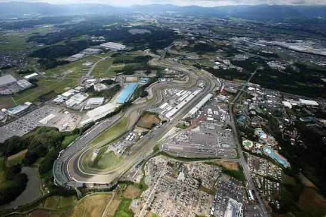

Асфальт, гравій, легенда
Траси
Кожен автодром має власний характер — від швидкісних прямих Монци до непередбачуваних вуличок Монако.
Кожен автодром має власний характер — від швидкісних прямих Монци до непередбачуваних вуличок Монако.





Перегляньте фотогалерею найяскравіших моментів на цих трасах.
Під час підготовки цієї сторінки використано перевірені офіційні та довідкові джерела.